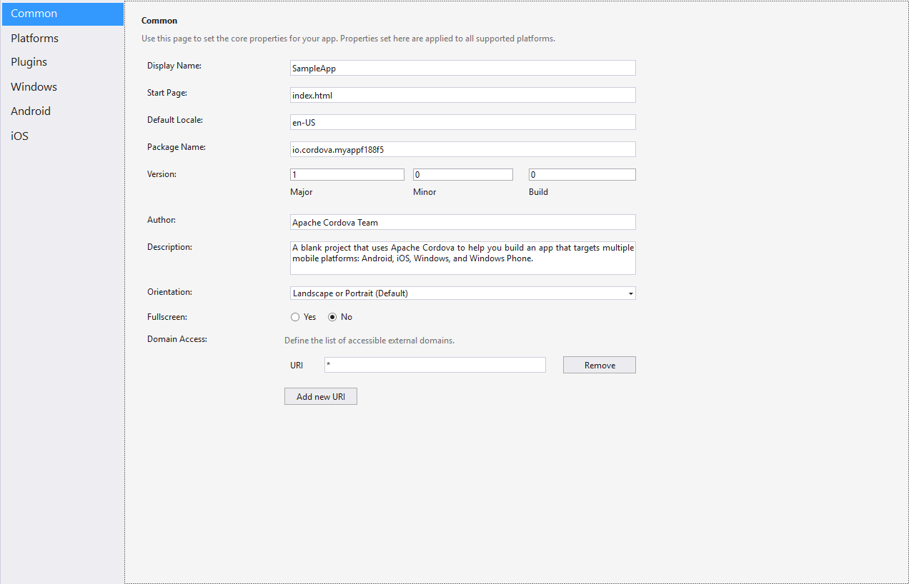

Streamlining Cross-Platform Development
Apache Cordova & Visual Studio 2015
Anthony Turner
Open-Source Software Engineer, Microsoft
github.com/mzxgiant www.anthturner.com
Why?
"Oh no, not another development framework to learn..."
Modern software development requires multiple platforms to make apps accessible to everyone
Multiple Languages
Multiple Toolchains
Multiple Test Suites
Let's fix that.
& Visual Studio Tools for Apache Cordova
Why Cordova?
Completely Free
Easy to Learn
Write Once, Deploy Everywhere
Access to Native Functionality
How Does It Work?
Applications are executed in a web view control
Javascript exposes native device functionality
cordova.exec(function(successCallback) {},
function(errorCallback) {},
"service",
"action",
["firstArgument", "secondArgument", 42, false]);
navigator.compass.getCurrentHeading(successCallback, errorCallback);
The Plugin Story
Cordova has 19 built-in plugins, covering common native device functionality
The Cordova Registry has 1,182 plugins
Android
iOS
Windows Phone
Blackberry
Ubuntu
Firefox OS
Fire OS
Browser App
TACO
Tools for Apache COrdova
Folders
There are 3 folders that are important:
-
merges
Holds platform-specific script overrides for Cordova plugins and application code -
res
Holds app icons and other native resources for each supported platform -
www
Holds your application and its direct dependencies
bower.json
Contains selected dependency packages from the Bower package manager
This may include Bootstrap, jQuery, AngularJS, etc.
build.json
Contains required parameters to build a signed package for deployment on Android platforms
config.xml
Contains Cordova settings for the app, including managing plugins
config.xml

taco.json
Defines which version of the Cordova CLI Visual Studio uses to build the project